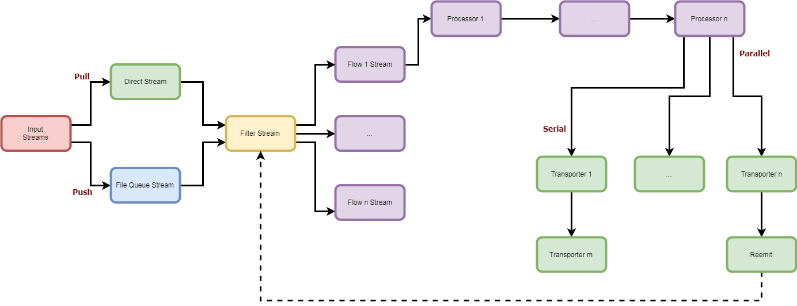

nsyslog
The next gen log agent
Blazing Fast
Thanks to the powerful streams module by NodeJS, all I/O tasks are performed in non-blocking async mode. Designed for performance, both CPU and RAM usage, nsyslog has a minimal footprint.
Multi process flows
Distribute work flows across multiple CPU cores for concurrent data processing.
Modular
Extend the capabilities of nsyslog with a wide range of readers, processors and transporters.
nsyslog
The next generation log agent!

NSyslog is a modern, new generation, log agent and syslog server. It features a modular flow architecture of data collectors (inputs), processors and transporters.
Since all the codebase is written in NodeJS, it has a very small memory footprint and excels at data input/output. It also benefits from the excellent streams framework provided natively by node.
Main Features
- Small memory footprint
- Flow control of push and pull inputs
- On-Disk input data buffering
- A wide core catalog inputs, processors and transporters
- Extensible with custom inputs, processors and transporters
- Support for Apache Storm multilang protocol
- Multicore flows for parallel processing
Quick Start
Configuration File
- Introduction
- Global configurations
- Inputs
- Filters and Filter Groups
- Processors and Processor Groups
- Transporters and Transporter Groups
- Flows
- Custom components
API
Inputs
- Apache Kafka
- Command Input
- File Watcher
- HTTP Client
- HTTP Server
- Redis
- Standard Input
- Syslog UDP, TCP and TLS
- WebSocket Server
- Windows Events
- ZeroMQ
Processors
- Array
- CSV output
- CSV parser
- Date format
- Filter Aggregator
- Generic parser
- JSON parser
- KeyValue parser
- Merge
- Multilang Protocol
- Properties
- Sequence
- Split
- Syslog parser
- Timestamp
- Translate
- XML parser